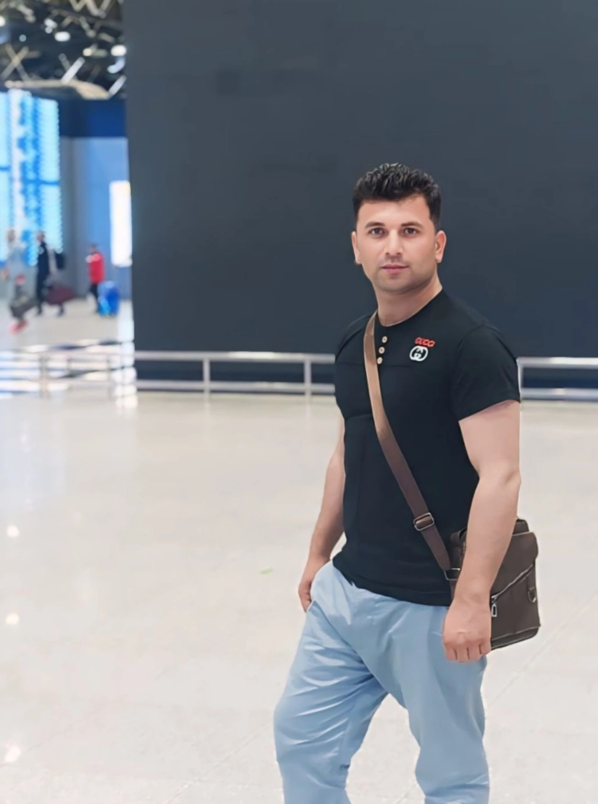

ژورنالیست، پروډیوسر، نطاق او رپورټر؛ له راډیو او تلویزیون څخه تر مطبوعاتي او دولتي چارو پورې د کلونو مسلکي تجربې لرونکی.

سلیمان دهقان د افغانستان د کونړ ولایت د اسعدآباد ښار دی. هغه د مکتب د متعلم په توګه له تلویزیون سره عملي کار پیل کړ او وروسته یې دغه تجربه په مسلکي رسنیز مسلک بدله کړه.
له ۲۰۰۹ کال راهیسې یې په رسمي ډول د افغانستان په رسنیز ډګر کې فعالیت کړی او د نطاق، پروډیوسر، ژورنالیست او رپورټر په توګه یې دندې ترسره کړې دي.
دهقان د جمهوري نظام په وروستیو کلونو کې په دولتي جوړښتونو کې هم کار کړی او د ولسمشر د فوقالعاده ځانګړي استازي محمد یوسف غضنفر په رسمي تشکیلاتو کې یې د پښتو مطبوعاتي چارو مسؤولیت درلود.
د تعلیمي راډیو او تلویزیون په اداره کې مسلکي فعالیت.
د راډیو او تلویزیون د پروګرامونو په تولید او وړاندې کولو کې فعالیت.
د راډیو او تلویزیون لپاره د خبرونو او راپورونو په برخه کې فعالیت.
د دفتر اړوندې پښتو مطبوعاتي او رسنیزې چارې.
د ښوونځي زده کړې او فراغت — ۱۳۹۲
د سیاسي علومو رشته — فراغت ۱۳۹۶
د ورکشاپونو نېټې نه دي شاملې.
USAID
USAID
BBC Media Action
د لومړي کانګرس د ګډون او هڅو ستاینه
د مسلکي اړیکو او رسنیزو همکاریو لپاره:
Email: sulimandihqan49@gmail.com
Journalist, Producer, Presenter and Reporter with years of professional experience in broadcasting, journalism, media and public communications.
Suliman Dihqan is an Afghan journalist and media professional from Asadabad, Kunar, Afghanistan. He began practical television work while he was still a school student and later developed that experience into a professional media career.
Since 2009, he has worked professionally as an announcer, producer, presenter, journalist and reporter.
During the final years of the Islamic Republic, Dihqan also served in government structures and worked in the official structure of Mohammad Yousuf Ghaznfar, the President's Special Representative, where he was responsible for Pashto media and press affairs.
Graduated in 2013 (1392)
Political Science — graduated in 2017 (1396)
USAID
USAID
BBC Media Action
For professional inquiries and media cooperation:
Email: sulimandihqan49@gmail.com